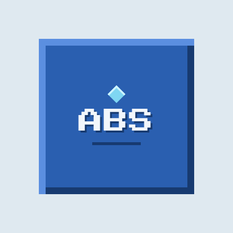

AZURES BOT SERVICE
ABS Control Panel
Manage bot skins and movement settings through your authenticated ABS API, or export a local Paper configuration.
Secure API connection
Use your HTTPS ABS service URL and operator token. The token stays in this page's memory only; it is not saved in local storage or included in exported configuration.
Not connected
Bot skin
The Paper plugin applies this skin to the matching online player. Use a Minecraft texture URL, not a PNG upload URL.
No skin selected
Bot behavior
Local Paper configuration export
This export is a local fallback for the Paper plugin. It never contains your API token.